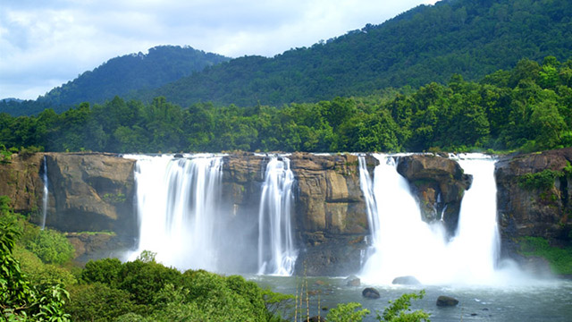

Kerala, a state situated on the tropical Malabar Coast of southwestern India, is one of the most popular tourist destinations
in the country. Named as one of the ten paradises of the world by National Geographic Traveler,
Kerala is famous especially for its ecotourism initiatives and beautiful backwaters.
Kerala has unique culture and traditions coupled with its varied demography.
Several international agencies ranging from UNESCO to National Geographic have recognised the state's tourism potential.
Kerala was named by TIME magazine in 2022 among the 50 extraordinary destinations to explore in its list of the
World's Greatest Places. In 2023, Kerala was listed at the 13th spot in 'The New York Times' annual
list of places to visit and was the only tourist destination listed from India.
Kerala, a state in the southwest coastal area of India, is spread over 38,863 kilometres squares kilometres.
It is the 21st largest state in India in terms of area.Kerala has 14 districts that are enriched with natural beauty.
Though a small state, Kerala carries the Western Ghats, farmlands planted with various trees, most significant of which
is coconut, the rivers Ponnani (Bharathapuzha), Periyar, Chalakudi, and Pamba that flow to the Arabian Sea and also
comprise a variety of flora and fauna as the land and hilly areas are covered with rainforests.
Kerala is the 8th largest economy in India which is growing at a faster pace. The IT, industrial, and agricultural
sectors in Kerala are flourishing. Tourism in Kerala is at an all-time high because the environment offers different
experiences with the changing environment.
The capital of Kerala, Thiruvananthapuram, is an industrial hub.
The manufacturing as well as agricultural activities carried out in the Kerala capital are important for the economy of the state.
The Kerala Capital has a rail terminus, road facilities, an airport, and a harbour. It is also an educational site with the University
of Kerala and other large Institutions set up here.
Amazing Facts About Kerala
Kerala is referred to as ‘God’s own country.
Alappuzha, a city in Kerala, is known as ‘Venice of the East'.
Vasco Da Gama landed in the Kozhikode city of Kerala.
The literacy rate of Kerala is 94% and is the highest of all of India.
Explore Our Destinations
Kerala has an endless list of tourist destinations that will interest any traveller.
Renowned for its scenic locations and natural beauty, Kerala is sure to enchant any nature lover with its hills,
backwaters, beaches, waterfalls and wildlife. The state also has a rich heritage and thriving culture one can explore
by visiting the various forts, palaces, museums, monuments and pilgrim centers.
Both natural and manmade brilliance await you at every turn.
Beaches
Kerala is home to a number of spectacular beaches that will take your breath away. As Kerala is a coastal state,
some of the most popular tourist destinations in Kerala are beaches like Kovalam, Varkala, Chowara, Chavakkad, Nattika, Cherai, Kizhunna, Poovar and the list goes on and on.
The Kerala coast is replete with exotic resorts and hotels where travellers can spend their time sunbathing,
swimming or simply enjoying the stunning view.
Kovalam Beach:Trivandrum
Kovalam is an internationally renowned beach with three adjacent crescent beaches. It has been a favourite haunt of
tourists since the 1930s. A massive rocky promontory on the beach has created a beautiful bay of calm waters ideal for sea bathing.
The leisure options at this beach are plenty and diverse. Sunbathing, swimming, herbal body toning massages, special cultural programmes and catamaran cruising are some of them.
The tropical sun acts so fast that one can see the faint blush of coppery tan on the skin in a matter of minutes. Life on the beach begins late in the day and carries on well into the night.
The beach complex includes a string of budget cottages, Ayurvedic health resorts, convention facilities, shopping zones, swimming pools, Yoga and Ayurvedic massage centres.
Accommodation facilities for tourists at Kovalam range from five star hotels to budget hotels and the choice of food available at restaurants and cafeterias range from Continental
varieties to South Indian delicacies.Thiruvananthapuram, the capital city of Kerala, is just 16 km away from Kovalam and getting there is no hassle. But if you are on holiday it is better
to stay in Kovalam and visit the city. The city of Thiruvananthapuram has many interesting places to see like the Napier Museum, the Sri Chitra Art Gallery and the Padmanabhaswamy Temple.
The SMSM Institute, a State owned handicrafts emporium, is the ideal place to pick up ethnic curios and other articles.
Backwaters
The scenic backwaters of Kerala comprise serene stretches of lakes, canals and lagoons located parallel to the coast of the Arabian Sea.
The backwater regions of Kerala are one of the most popular tourist destinations in the world. The tranquil backwater cruises are a once in a lifetime experience.
Alappuzha, known as the 'Venice of the East',is especially popular for its houseboat cruises where you can soak in nature at its finest form.
Alappuzha
Referred to as the Venice of the East, Alappuzha has always enjoyed an important place in the maritime history of Kerala. Today, it is famous for its boat races, backwater holidays, beaches, marine products and coir industry.
Alappuzha Beach is a popular picnic spot. The pier, which extends out to the sea here, is over 137 years old. Entertainment facilities at the Vijaya Beach Park add to the attraction of the beach.
There is also an old lighthouse nearby which greatly intrigues all visitors.Another delightful experience while in Alappuzha is the houseboat cruise. The houseboats you find in the backwaters of
Alappuzha are in fact a reworked version of the Kettuvallams of olden times. Kettuvallam is a Malayalam word, ‘Kettu’, refers to dwelling structures and ‘Vallom’ means boat. In the olden days,
kettuvallam or boat with thatched roof that covers over wooden hulls was used to carry tons of rice and spices.Of late, houseboats come equipped with all the comforts of a good hotel room including furnished bedrooms, modern toilets,
living rooms, a kitchen and even a balcony for angling. An uninterrupted view of life in the backwaters can be enjoyed while staying in a houseboat.
Wild Life
There are a number of popular wildlife sanctuaries in Kerala housing exotic and rare species of flora and fauna. Nestled
in the elaborate forest of the majestic Western Ghats or Sahyadri Ranges in Kerala are fourteen wildlife sanctuaries and
two tiger reserves. Kerala also has six national parks containing protected and endangered species like the Indian Sloth-Bear,
Lion-Tailed Macaque, Indian Bison, Bengal Tiger, Nilgiri Tahr etc.
Silent Valley National Park:Palakkad
The eerie silence, emphasised by the missing Cicadas that gave Silent Valley its name, may make you feel and hear things you could never have imagined. A few centuries ago, before humans reached the Silent Valley,
this reserve of tropical rainforests stood undisturbed and tranquil like a perfectly hidden diamond.Located in the Northeast corner of Palakkad district, Silent Valley was named a National Park only in 1984.
It was called 'Sairandhrivanam' as it was here that Sairandhiri (the secret identity donned by Panchali, from the epic Mahabharata) is believed to have hidden along with her five husbands, the Pandavas,while escaping their cruel cousins, the Kauravas.
The Kunthippuzha River which feeds the entire forest was named after Kunthi, mother of the Pandavas.It is shielded by the Nilgiri Plateau to the North and the Mannarkkad Plains to the South. It constitutes the centrepiece of the Nilgiri Biosphere Reserve,
an integral part of the Western Ghats, christened a World Heritage Site by UNESCO in 2012.The flora and fauna found here make one wonder if this ecosystem has survived since the very beginning of time. From tigers, leopards, elephants, snakes,
Lion-Tailed Macaques and Malabar Giant Squirrels to moths, bugs and toads, the diversity in fauna is breathtaking. Along with them, one can view over 1,000 species of flowering plants and another 110 species of orchids that enchant all who see them.
Over 400 species of moths and 200 species of butterflies have been catalogued here. The 128 species of beetles deserve special mention since 10 of them were previously unknown to mankind.
Hill Station
Kerala brings to you a magical tryst with nature through its various hills and hill stations. A majority of these places in Kerala are situated on the windward side of the majestic
Western Ghats. Enjoy the long chain of lush mist-clad hill stations of Kerala and explore the various plantations, wildlife,
flora and fauna that comprise an integral part of this experience.
Echo Point Munnar:Idukki
We all love places and experiences where we can reconnect with the child inside us. The childlike enthusiasm with which all our guests yell to their hearts content
at this wonderful location is a truly endearing sight.About 15 km from Munnar lies the famous Echo Point. Popular for its natural echo phenomenon, one can always
see the area full of eager visitors throughout the year. At an altitude of about 600 ft, people love taking a walk in the lush greenery surrounding the place. It is an ideal picnic spot.
People usually come across Echo Point while making the trip to Top Station, the highest point (1700m) in Munnar, on the Munnar-Kodaikanal road. Here the clouds seem like they are just an
arm’slength away and one gets a brilliant view of the valley below.This is also a prime viewing spot for the Neelakurinji (Strobilantheskunthianus), flowers which bloom once every twelve years.
Waterfalls
Kerala's proximity to the Western Ghats and its sprawling forests has ensured that there are a large number of waterfalls adorning the landscape.
They splash down the mountains leaving all who view them enchanted by the sheer magnitude and picturesque quality they possess. From picnics to excursions to simple nature walks,
these are special zones where time stops to marvel at the breath-taking creations of nature.

Athirappilly Waterfalls:Thrissur
the entrance to the Sholayar Forest Ranges lie the majestic Athirappilly Waterfalls.
Plummeting to the ground from a height of around 80 feet, it is the biggest of its kind in Kerala.
Our high-resolution visuals shall bring this natural wonder to life. The rare flora and fauna around the place make it among the
most picturesque locations in the country.It is a delightful picnic spot that has captured the heart of all its visitors.
Monuments
Kerala has had a long line of rulers and armies that have shaped the culture and architecture of the State over centuries.
Many of the prominent forts and palaces still exist to this day as a reminder of a bygone era.
Bekalfort:Kasargod
Kasaragod boasts of the largest and best preserved Fort in the whole of Kerala, bordered by a magnificent beach.
Shaped like a giant keyhole, the historic Bekal Fort was built in the 17th century. This historic monument offers a
superb view of the Arabian Sea from its tall observation towers, which were occupied by gigantic cannons till afew
centuries ago.Near the Fort is an old Mosque that is said to have been built by Tipu Sultan of Mysore. Originally
constructed by the rulers of the ancient Kadampa Dynasty, the Fort changed hands over the years to the Kolathiri
Rajas, the Vijayanagara Empire, Tipu Sultan and finally, the British East India Company.Today, the Bekal Fort and
its scenic surroundings are fast becoming an international tourist destination and a favourite shooting locale for
film makers.
Districts in Kerala
The Indian state of Kerala is divided into 14 districts. Districts are the major administrative units of a state which are further sub-divided into revenue divisions and taluks.Idukki district is the largest district in Kerala with a total land area of 4,61,223.14 hectares.
When the independent India merged smaller states together, Travancore and Cochin states were integrated to form Travancore-Cochin state on 1 July 1949. However, North Malabar and South Malabar remained under the Madras state. The States Reorganisation Act of 1 November 1956 elevated Kerala to statehood
through the unification of Malayalam-speaking territories in the southwestern Malabar Coast of India.The state comprises three parts – the Northern Kerala districts of Kasaragod, Kannur, Wayanad, Kozhikode, Malappuram; the Central Kerala districts of Palakkad, Thrissur, Ernakulam, Idukki;and the Southern
Kerala districts of Kottayam,Alappuzha, Pathanamthitta, Kollam, and Thiruvananthapuram.Such a regional division occurred being part of historical regions of Cochin, North Malabar, South Malabar, and Travancore. The North Malabar region, which is culturally distinct from the rest of Kerala, entirely lies
in the districts of Northern Kerala.North Malabar region includes Kasargod, Kannur,Wayanad, and the northern region of Kozhikode district, south Malabar region includes south-central part
of Kozhikode district, Malappuram, parts except Chittoor taluk of Palakkad district, Kunnamkulam and Chavakkad region of Thrissur district. The regions of South Malabar and Kingdom of Cochin, both of which share many historical, geographical, and cultural similarities, together constitute the districts of
Central Kerala.The Travancore region is incorporated in the districts of South Kerala.The Travancore region was again divided into three zones as Northern Travancore (Hill Range)(Idukki District, Kottayam district and eastern portion of Ernakulam district),
Central Travancore (Central Range)(Kollam district, Pathanamthitta and Alappuzha district) and Southern Travancore (Southern Range)(Thiruvananthapuram).